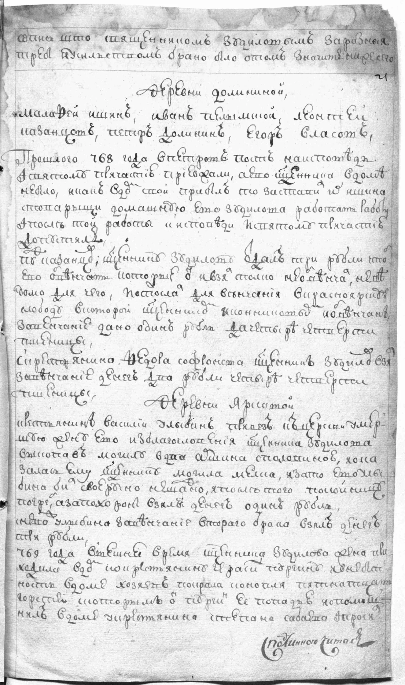

Тобольский архив · ф. И156, оп. 2, д. 2294, л. 40–43 · 1767–1769
Крестьяне девяти деревень прихода Николаевской церкви села Казанского записали всё, что брал с них священник Тимофей Зудилов, — за венчание, похороны, молитву младенцу. И за что бил.

Здесь будет скан листа.
Файлы сканов пока не добавлены.
Наведите на лист — появится лупа. Нажмите — откроется крупно.Нажмите на лист, чтобы открыть его крупно.
Это «опись» — список жалоб, который прихожане составили на своего священника. По деревням, двор за двором: кто сколько отдал, кого не допустили к исповеди, кого поп побил.
Подписать её староста Семён Батурин не смог: «вместо старосты Семена Батурина ево прозьбой крестьянин Иван Пневской руку приложил».
Деревня Яркова · л. 40
«…показалось ему священнику могила мелка, и зато ево Улыбина бил своеручно нещадно и после того покойницу погрёб, а за похороны взял деньги один рубль».
Деревня Яркова · л. 40–41
«…оная попадья набрала в рот пива и прыскала к нему Пургину в глаза, а конопля не отдала».
Деревня Долинина · л. 40
«Пуд Казанцов, священнику Зудилову отдал 3 рубля чтоб его обвенчать которые он взял только не обвенча, неведомо для чего, отослал для венчания в Красноярскую слободу».
Деревня Казанцева · л. 42
«…в сенокосное время завешивает под косьбу травы копен на тысячу и больше, а крестьян на то место недопущает и кто взайдет хвалился зарубит косою».
Деревня Казанцева · л. 42
«…звал попа Зудилова к родильнице с молитвой и оной поп не пошёл, а сем поехал для бранья ягод, и родильница без молитв умер».
Деревня Ренева · л. 43
«…поп Зудилов в рясах и со крестом господним шёл сосвятое водой и усильно ухватил у него Русакова пятеры чарки… и зато поп Зудилов бил ево до крови и бороду выдрал».
| За что | Сколько брал |
|---|---|
| Венчание | от 1 р. 50 к. до 5 р. и 10 аршин тонкого холстаАфанасия Ваганова после этого всё равно отослал венчаться в другой приход |
| Второй брак | 3 р. — 3 р. 50 к. |
| Похороны | 1 р.; со Степана Быкова — ещё четверть овсаи просил два рубля сверху, а за отказ побил |
| Молитва и крещение младенца | 15 к. и двух поросят «за тридцать копеек»или день работы в доме попа |
| «Записать бывшим у исповеди» | деньги, два пуда рыбы, 40 к.а записать — так и не записал |
Это голос одной стороны — прихожан. Что ответил священник и чем кончилось дело, по этим четырём листам не видно. Ответ ищут в остальных листах дела и в других делах духовного ведомства.
Так устроено исследование: один документ — это голос, а не приговор. Мы сводим вместе разные источники и честно показываем, где сведения заканчиваются.
Расшифровка — Евгений Кравченко. Орфография документа сохранена.
Сопись что священником Зудиловым за разные требы и усильством брано было о том значит ниже сего
Малафей Ишин, Иван Пелымский, Леонтей Казанцев, Петр Долинин, Егор Власов, прошлого 1768 года в петров пост на исповедь святому причастию приезжали, а ево священника в доме небыло, и как в дом свой прибыл то заставил их Ишина с товарищами домашнюю его Зудилова работать работу и после той работы и исповеди и святому причастию допустил.
Пуд Казанцов, священнику Зудилову отдал 3 рубля чтоб его обвенчать которые он взял только не обвенча, неведомо для чего, отослал для венчания в Красноярскую слободу в которой священником Иконниковым обвенчан, за венчание дано один рубль да четыре четверти пшеницы.
С крестьянина Федора Софронова священник Зудилов взял за венчание деньги два рубля и четы четверти пшеницы.
Крестьянин Василий Улыбин привез к церкви умершую жену ево из благословления священника Зудилова выкопав могилу в два аршина с половиной, показалось ему священнику могила мелка, и зато ево Улыбина бил своеручно нещадно и после того покойницу погрёб, а за похороны взял деньги один рубль.
У него ж Улыбина за венчание второго брака взял денег три рубля
1769 года в священное время священника Зудилова жена в дом ко крестьянину Герасиму Пургину и в небытность в доме хозяев покрала конопли пятнадцать горстей с которым он Пургин её попадью и опомошнил в доме у крестьянина Степана Сабаева и просил то конопле обратно, на что оная попадья набрала в рот пива и прыскала к нему Пургину в глаза, а конопля не отдала.
Афанасий Ваганов, объявил священник Зудилов взял с него за венчание пять рублей, десять аршин холста тонкого, и по взятии неведомо для чего необвенчал и отослал венчать в Красноярскую слободу к священнику Невочикову, коем и обвенчал и за венчание взял два рубля пятьдесят копеек
Крестьянин Федор Зорин объявил будучи в доме у крестьянина Афанасия Малцова священник Зудилов неведомо за что бил ево Зорина своеручно.
Крестьянин Евдоким Суботин священнику Зудилову отдал денег два рубля за венчание.
Крестьянин Игнатей Крылов священнику Зудилову отдал за венчание три рубля.
С крестьянина Василия Медведева священник Зудилов взял за молитву и за крещение младенца пятнадцать копеек, да дву поросят за тридцать копеек.
Крестьянин Степан Куроптев, за молитву младенца домовой ево попа работу один день работал.
Семен Куроптев за молитву младенца работал к хоромян(?) двери.
У Антона Валова взял священник Зудилов железа пуд два топора, две косы и за оное требовал платы толком незнаемо для чего неотдал.
Крестьянина Ивана Брекоткина сына Анисима написал небывшим у исповеди исвятого причастия коей тогда был полу году.
Крестьянина Петра Рябова священник Зудилов взял со второго брака за венчание три рубли пятьдесят копеек.
Крестьянина Федора Метелева священник Зудилов взял за венчание денег четыре рубля.
С крестьянина Семена Куроптева священник Зудилов за венчание взял три рубля тридцать копеек.
Крестьян Степан Штинников, Евтихий Алферов, Борис Крюков, Иван Шевелев, Михайло Волков, 1769 года в успенской пост к священнику Зудилову на исповедь и святому причастию приходили, как он на что ведь не принял, и взял с них деньгами, пообещал записать бывшими только не записал.
Тимофей Кошуков с женой, Иван Огорелков, брат Прохор и сестра Афимья приходили на исповедь коих и не принял, а велел собраться большее.
Десятник Клеметей Томних(?) с обывателями объявили священник Зудилов в сенокосное время завешивает под косьбу травы копен на тысячу и больше, а крестьян на то место недопущает и кто взайдет хвалился зарубит косою.
Яков Долгих приходил к священнику Зудилову на исповедь и оной для чего непринял.
С крестьянина Степана Быкова священник Зудилов взял за похороны денег рубль да четверть овса и ещё просил два рубля коих по убеждению ево дать нечево зато поп бил ево Быкова своеручно.
С крестьянина Михайла Феклистова поп Зудилов взял за венчание рубль пятьдесят копеек.
Крестьянина Леонтия Быкова коей нем и глух поп Зудилов пишет каждогодно небывшим у исповеди, а к причастию не допускает.
Филипа Бухалова неведомо для чего к причастию не допустил.
Крестьянин Иван Шевелев звал попа Зудилова к родильнице с молитвой и оной поп не пошёл, а сем поехал для бранья ягод, и родильница без молитв умер.
Церковной староста Нифонт Бухалов объявил поп Зудилов брал церковные восемь плах на домовое строение взаем, а девятую усилено, коих и не отдает и после того брал плах на то же строение самовольно, а обратно не отдал.
В 1767 году Крестьянская жена Фёкла Семибратова с двумя дочермии попу Зудлову на исповедь приходили коих и не принял, а написал небывшими.
Крестьянские жены Катерина Третьякова, Матрена Фугаевых к попу Зудилову на исповедь приходили покой не принял, а написал небывшими.
С крестьянина Петра Гребенщикова поп Зудилов за венчание свадьбы взял два рубля, а свадьбу не обвенчал и отослал для венчания в Красноярскую слободу к священнику Иконникову
С крестьянина Александра Долгушина, поп Зудилов взял за венчание три рубли пятьдесят копеек.
С крестьянина Никиты Попкова поп Зудилов взял за венчание свадьбы два рубля пятьдесят копеек.
Крестьянин Тимофей Русаков в 1767 году в спасов день подле обедни продавал он Русаков чарки, а поп Зудилов в рясах и со крестом господним шёл сосвятое водой и усильно ухватил у него Русакова пятеры чарки, и он Русаков не стал отдавать и зато поп Зудилов бил ево до крови и бороду выдрал.
С крестьянина Захара Санникова поп Зудилов Взял за венчание два рубля пятнадцать копеек.
В 1767 году поп Зудилов взял с крестьянина Бориса Обрядова два пуда рыбы, с Семена Шепелина денег сорок копеек и что обещал написать бывшими у исповеди и святого причастия, тоимо не написал
У крестьянина Михайла Дорохина поп Зудилов украл с лугу сена двадцать пять копен.
И подлиннаго рукоприложение. К сей описи вместо старосты Семена Батурина ево прозьбой крестьянин Иван Пневской руку приложил
Находим, читаем скоропись и рассказываем, что в ней. Подарите родителям историю их рода к Новому году.